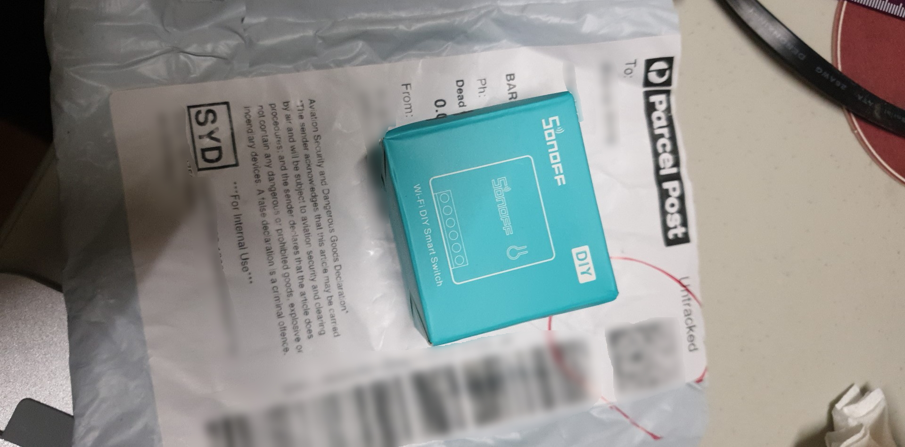
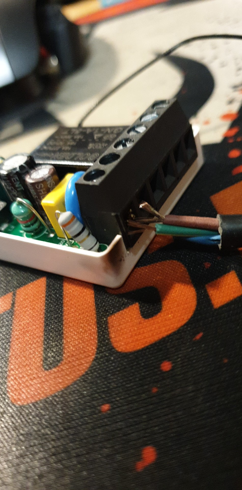

I ordered a Sonoff Mini, and it arrived in the mail today.
I’m planning to connect it to my ceiling lights.
First thing’s first, Tasmota time!
We’ll be flashing Sonoff-Tasmota via Sonoff DIY OTA mode.
Steps
Disclaimer: This device plays with LIVE ELECTRICITY. Don’t kill yourself.
0) Download the stuff you need
- Sonoff DIY Tool
- Tasmota firmware file (ie sonoff-basic.bin 2.3.0)
1) Update the firmware
To first update the firmware, we need to make sure that the Sonoff Mini’s stock firmware is at least version 3.1.
Pair the device normally, through the eWeLink app on your phone.
2) Enable DIY mode
NOTE: TURN OFF THE DEVICE AND DISCONNECT IT FROM THE MAINS.
By thr way: TURN OFF THE DEVICE AND DISCONNECT IT FROM THE MAINS
Open up the device (there are clips on the left and right edges). Then install a jumper into the OTA-GND pins and close up the device again.
3) Flashing
When powered on, the Sonoff Mini will attempt to connect to an access point with the SSID sonoffDiy and PW 20170618sn.
With your phone (or some AP), create a wireless network with those credentials and wait for the Sonoff to connect.
Now, connect your laptop to the network and run the Sonoff DIY Tool.
The device should appear in the application, allowing you to toggle on and off the relay.
Press the Firmware flash button, and select the Tasmota firmware.
Press OK, and then wait for the firmware to finish flashing.
4) Setup
After the flash is complete, the device should restart and broadcast an AP with the SSID sonoff-XXXX (XXXX replaces some series of digits).
Somehow, after flashing it again (to upgrade it to a later version) I bricked the device…
As I don’t have the right soldering tools to hook up wires, I ordered a few more units…
Aaaaah!
Also, the wiring is N N L L S S, and *NOT N L N L S S.
I made a mistake and basically shorted my Neutral and Live wires together.
Saw a big spark, and heard a loud fizzle. Oops.
